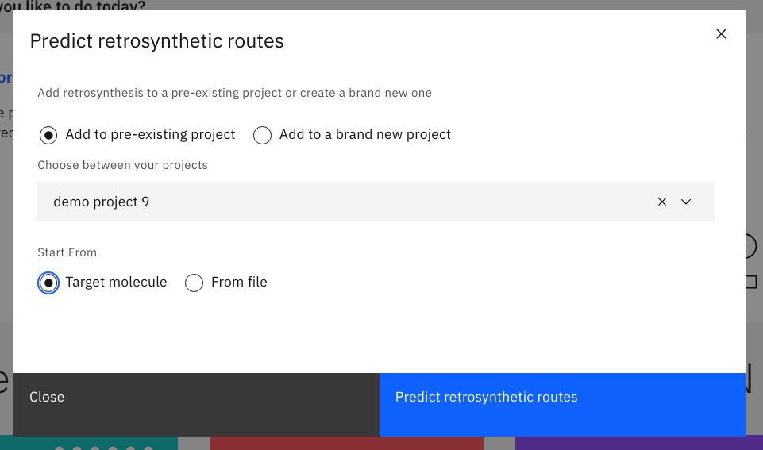
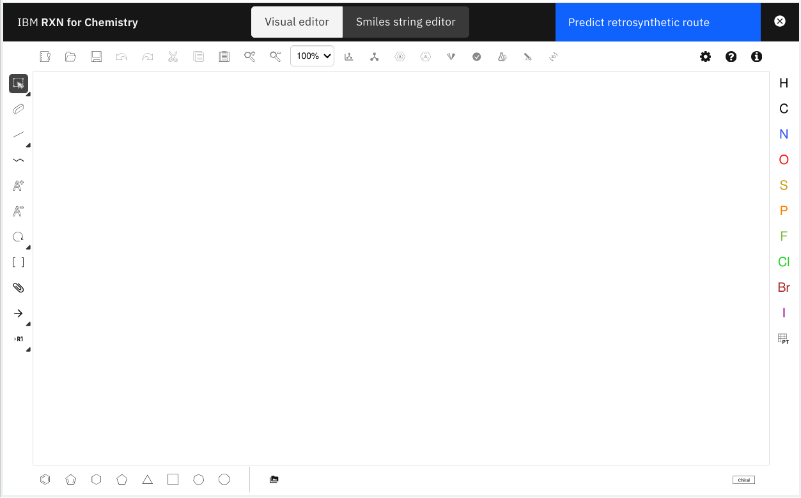

RXN for Chemistry - Quick start
This guide is a short tutorial to quickly familiarize yourself with the user interface of RXN for Chemistry.
Product Overview
Use AI to predict outcomes of chemical reactions, retrosynthesis pathways, and experimental procedures. All using infrastructure that performs analyses quickly and securely.
Our tool is based on molecular transformer models trained on 2.5 million chemical reactions. This class of models is flexible, non-rule-based, and scalable. Users never have to wait in queues, resulting in faster results and better uptime.
-
A visual drawing editor allows you to add your own chemical structures and explore RXN’s features.
-
Create projects and collaborate on complex multi-step reaction syntheses or novel chemical reaction designs.
-
Simple APIs allow you to run predictions at scale without worrying about provisioning, managing, and monitoring backend resources.
-
Integrate these API calls into your own workflows with minimal setup.
-
AI models generate results without human bias, creating new discovery opportunities.
Start Tutorial
| An account on a SaaS instance of RXN for Chemistry is required to complete this Quick Start. |
|
Step 1: Log into RXN for Chemistry
Point your web browser to https://rxn.app.accelerate.science/, then click on the link in the upper right of the screen labeled ``Get Started''.

Step 2: Select your first-time login option
If this is your first time using RXN for Chemistry, you have several login options.
You may click on Sign up to create login credentials directly on the RXN site. After signing up you may then click on Log in to authenticate and access RXN for Chemistry.
Alternatively you may use your login credentials from Google or Facebook to log into RXN for Cheimstry.

Step 3: Add a new Project
After authenticating successfully you will be taken the the RXN for Chemistry Home view. Click on the button Add new project in the upper right of the Home view.

| The Home view contains access to all of the major functions of RXN for Chemistry. You can return to the home screen anytime by clicking on the link Home in the upper left of the web page |
Step 4: Name your new Project
In the dialog box that pops up enter a name for your new project. You will be adding reactions to this project in subsequent tutorials.
After entering a name for your new project, click on the button Create a new project.

| In the RXN for Chemisty tool, models of molecules and reactions may be organized into projects. Each project may contain several molecular and reaction models, and each project may be accessed and worked on by multiple team members. Each project is access controlled by allowing only specified teams or individuals to access the project resources. |
Step 5: View the Project Dashboard
You will be taken to the Project Dashboard for your new project. After viewing your project Dashboard, click on the Home link on the left hand menu.

| The Project Dashboard page contains a summary of the work and artifacts produced by you and other team members. The information presented shows a summary of all the different models and reactions that have been developed. You have instant access to all of your teams work. There is also a chronological list of Recent activities which may be used to track the contributions and work for each team member. |
Step 6: Go to the Projects view page
From the Home view, click on Projects in the left hand menu.

| The Projects link in the upper left of the Home view will take you to the Projects page, which contains a list of all of the projects you and your team have created with RXN for Chemistry. |
Step 7: View the Project list
After viewing the Project list, click on the Home link to return to the Home page.

|
The Project List contains links to each of your projects. A project consists of the molecular models and the results of all of the chemical reactions simulated with RXN for Chemistry. Clicking on the project Name will take you to the Dashboard for that project. |
Step 8: Start the process to Predict retrosynthesis
From the Home page view, click on Predict retrosynthesis.

Step 9: Add new model to pre-existing project or new project
Add to a pre-existing project by selecting Add to pre-existing project then selecting the Project name from the drop down list.
Or you may create and name a new project by selecting Add to a brand new project.

Step 10: Select Start from target molecule, then click Predict retrosynthetic routes
Select Target molecule in the dialog box to use the built-in molecule editor to create a model of the target molecule.
Click the button Predict retrosynthetic routes. This will take you to the visual molecule editor.
| Instead of selecting Target molecule, you may select From file to upload a file containing one or more SMILES strings of target molecules. |

Step 11: Start building a molecule in the visual editor
The visual editor in RXN for Chemistry is illustrated below. Note the icons in the toolbars located in each side of the visual editor window.

|
The molecular modeling tool used in RXN for Chemistry is based on the open source tool Ketcher. The tool is very easy to use and you may view the guide for Ketcher by clicking on the links below. |
For this tutorial, we will enter a molecule named paliperidone palmitate (brand name Invega Sustenna). This compound is the active ingredient in medication used to treat schizophrenia and other psychotic disorders, and it is classified as an atypical antipsychotic drug.
Here is the 2D structure of the compound as provided by PubChem:

The complete PubChem reference for this compound is located at https://pubchem.ncbi.nlm.nih.gov/compound/9852746
|
Please use the Ketcher guide (if needed) and the PubChem reference to practice constructing the molecule in Ketcher. |
Step 12: Use the SMILES string editor
After entering the molecule into the visual editor click on the button labeled SMILES string editor at the top of the screen.
The SMILES string should appear as follows:
CCCCCCCCCCCCCCCC(=O)OC1CCCN2C1=NC(=C(C2=O)CCN3CCC(CC3)C4=NOC5=C4C=CC(=C5)F)C
| Instead of building the compound from scratch in the visual editor, you may copy/paste the SMILES string (or any SMILES strings) into the SMILES string editor to quickly add the molecule to your visual editor workspace. |
| The button labeled Validate SMILES string will check the validity of the molecule entered. |
Tutorial completed
This completes the Quick Start tutorial for RXN for Chemistry.
In this tutorial we covered the following:
-
Overview of the UI for RXN for Chemistry
-
Description and creation of projects
-
Use of the visual editor for molecules
-
Use of the SMILES string editor
Now that you have the basics covered you are ready to move on to the next series of tutorials:
-
Predict Retrosynthesis (a continuation of this tutorial)
-
Predict Product
-
Predict Reagents
IBM, the IBM logo, and ibm.com® are trademarks or registered trademarks of IBM Corporation, registered in many jurisdictions worldwide. Other product and service names might be trademarks of IBM or other companies. A current list of IBM trademarks is available here: Copyright and Trademark Information.